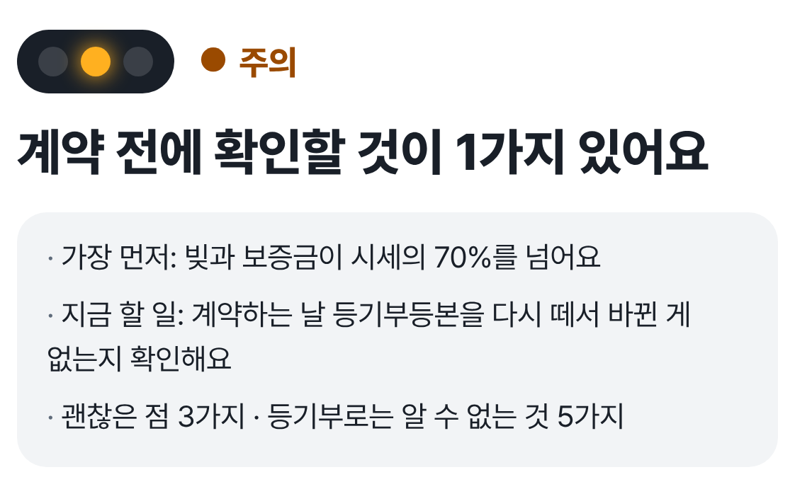
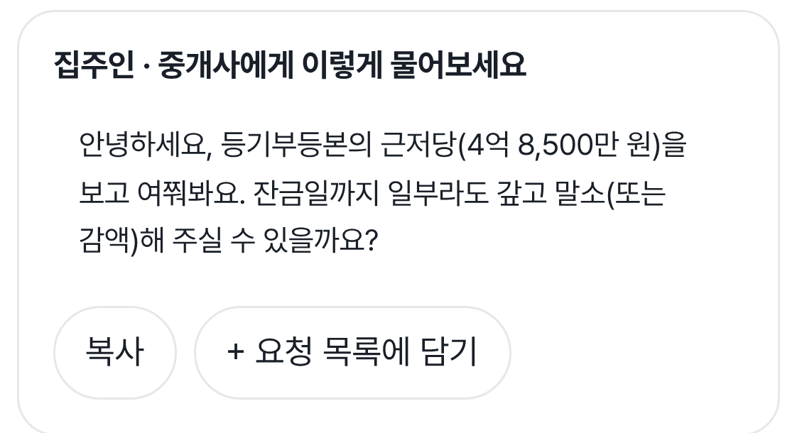
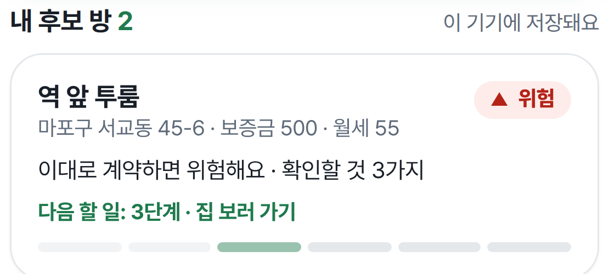

20살, 첫 집 계약
등기부등본 한 장으로
이 방의 위험과
계약 방법까지, 쉬운 말로
방 담기→등기부 올리기→
신호등→다음에 할 일

휴대폰으로
바로 써 보세요
바로 써 보세요
home-check-pi.vercel.app
가입 없이 시작 · 샘플 서류로 체험
등기부 원문은 기기 밖으로 보내지 않아요
등기부 원문은 기기 밖으로 보내지 않아요


실제 앱 화면 · 테스트용 가상 등기부
문제
"뭐부터 해야 할지
아무것도 모르겠다."
대상: 처음 혼자 원룸을 계약하는 20살 (→ 첫 계약 누구나 · 이사하는 사람)
근저당 · 확정일자는 처음 듣는 말이고, 등기부등본은 읽을 줄 몰라요. "중개사가 있으니 괜찮겠지" 하고 확인을 건너뛰어요.
122명 · 47억 원 익산 원룸 임대업자 한 명에게 대학생 등 임차인이 떼인 보증금 (뉴시스, 2019)
- 직거래 20대 · 사회초년생 7명 피해, 경찰 "등기부로 실제 소유자 확인을" (매일신문, 2024)
핵심 기능
- 내 후보 방: 방마다 신호등 · 6단계 진행
- 등기부 점검: 신호등 · 3줄 요약
- 다음에 할 일: 물어볼 말 · 특약 · 가족 요약
- 서류 · 준비물 · 동네 시세

이렇게 달라요
| 홈체크 전 | 홈체크로 |
|---|---|
| 체크리스트를 읽고 혼자 판단 | 이 방의 신호등 · 이유 · 근거 법령 |
| 위험하다는데 뭘 할지 모름 | 집주인에게 보낼 말 · 특약 문장 |
| 무엇을 놓쳤는지 모름 | 등기부로 알 수 없는 것 5가지까지 |
검증 · 만든 과정
340+자동 테스트
(GitHub에 올릴 때마다)
(GitHub에 올릴 때마다)
근거 29법령 · 공공기관 원문
확인 20개
확인 20개
규칙 18집주인 4 · 권리 기록 9
빚 비율 4 · 읽기 확인 1
빚 비율 4 · 읽기 확인 1
블라인드 시험
- 20건실제 양식을 따른 테스트용 가상 등기부(개발자가 보지 않은 것)
- 원인 13블라인드로 찾은 오류 원인, 모두 고침
- 60/60고친 뒤 전 항목 일치, 회귀 테스트로 지킴
- 기획(PRD)
- 화면 조사
- 규칙 판정
- 블라인드 시험
- 배포 · 자동 점검
기대 효과
- 계약 전, 이 방의 위험 신호를 혼자서도 확인
- 무엇을 물을지 문장으로 준비
- 가족과 같은 요약으로 함께 판단
- 필요하면 무료 상담(132 · 1533-8119)으로 연결
다음: 실제 인터넷등기소 PDF로 정확도 측정 · 건축물대장 연결